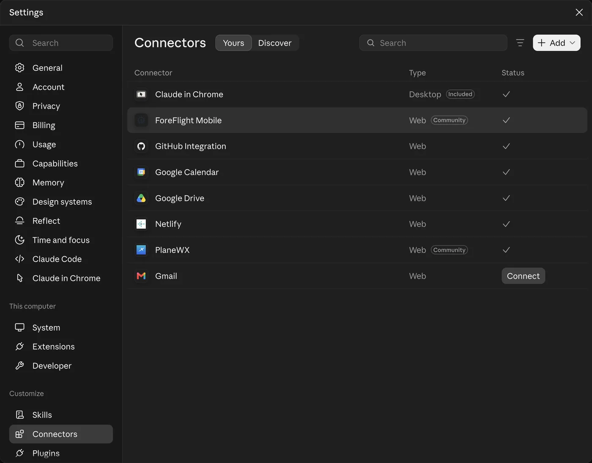
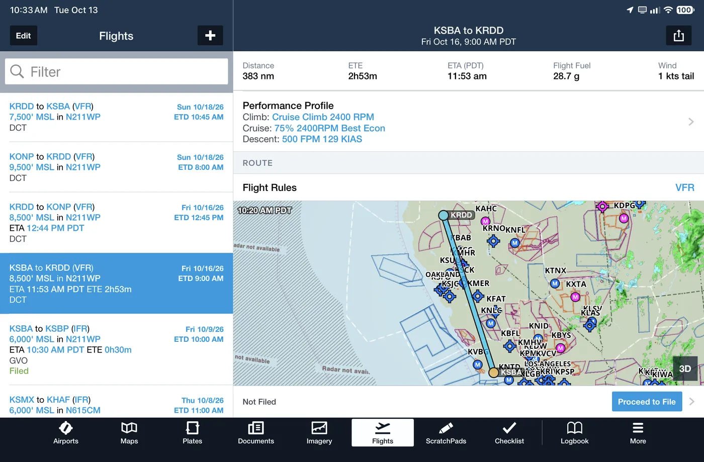

Purpose: Why connect Claude to your ForeFlight account, how to make the connection, and what the pairing looks like on a real trip and a real logbook.
Your ForeFlight account already holds years of flying: your logbook, your aircraft, your saved flights. Connect ForeFlight to Claude, and you can ask Claude about all of that in plain English, and have Claude build flights right back into ForeFlight.
(ForeFlight's connector also works in ChatGPT. This primer covers Claude.)
Bonus: on my first test, Claude spotted an airplane that appears twice in my ForeFlight data.
Three reasons to connect. See everywhere your logbook has taken you. Research a trip in one conversation. And when you like the plan, have Claude put the flights straight into ForeFlight.
Starter, Essential or Premium. Business and MFB subscriptions aren't supported. ForeFlight calls the connector a research preview, so features can change.
Connectors from Claude's directory work on every Claude plan, including Free. On Team and Enterprise plans, an owner has to turn ForeFlight Mobile on for the organization first. Do the setup on the web or desktop app; Anthropic lists installing connectors on mobile as beta.
Claude can create and edit flights and create, edit or remove draft logbook entries. Claude can't delete flights, aircraft or approved logbook entries.
WRITE changes data in ForeFlight; everything else only reads. Tool list as Claude saw the connector on 30-Oct-2026.
You'll need an individual ForeFlight plan, Starter, Essential or Premium, and a Claude account on any plan. ForeFlight calls the connector a preview, so expect ForeFlight to add and change features.

1 2 3① Connectors, under Customize · ② the Discover tab, where ForeFlight Mobile is listed before you connect · ③ ForeFlight Mobile, shown here on my Yours tab after connecting. My screen, 30-Oct-2026.
In Claude, open Connectors. The quickest way is from any chat: tap plus, then Connectors, then Manage connectors. In Settings, Connectors is at the very bottom, under Customize. Then find ForeFlight Mobile on the Discover tab.
Open the ForeFlight connector in ClaudeIllustration; real screenshot to come.
Open ForeFlight Mobile and click Connect. Claude then hands you over to ForeFlight.
Illustration. ForeFlight documents this sign-in and approval step for ChatGPT; Claude's version of these screens is still to be captured, and the wording may differ.
ForeFlight asks you to sign in with your ForeFlight account, if you aren't already signed in, and to approve access for Claude.
Illustration; real screenshot to come.
In any chat, open the plus or tools menu and make sure ForeFlight Mobile is switched on.
Total hours per year; 2026 is through 30-Oct. Figures lightly fictionalized for this page; the shape comes from my ForeFlight logbook via the connector, 30-Oct-2026.
Fourteen years of logbook, summarized by Claude from one question.
The live map, running a short tour: West & Baja, then Newport, Oregon (KONP), then San Pedro de la Cueva, Sonora (XSQA). Touch the map to take over. Open the full map
I asked Claude for every airport in my ForeFlight logbook, departures, destinations and route waypoints, and Claude built this map. Here it zooms to Newport, Oregon, then to San Pedro de la Cueva in Sonora, Mexico.
A replay of my real chat from 13-Oct-2026, trimmed. KSBA to the Oregon coast in N211WP.
First, a quick check. Claude found my 44 saved aircraft, and flagged an airplane that appears twice. That's a cleanup I'd never have spotted.
| Airport | Longest rwy | 100LL | From pilot reports |
|---|---|---|---|
| KAST | 5,794×100 | $6.49 | Crew car |
| KTMK | 5,001×75 | $7.00 | Two loaner cars; avoid north transient tie-downs |
| KONP | 5,398×100 | $7.99 | Crew car; FBO may close early |
| 6S2 | 3,000×60 | $7.20 | Call ahead for courtesy car; bumpy in north wind |
| KOTH | 5,980×150 | $8.00 | Reports of high landing fees |
| S05 | 3,601×60 | $6.80 | Shifting winds |
KONP trend as Claude described the outlook from ForeFlight's 10-day model outlook and the NWS Portland discussion, 13-Oct-2026. A trend, not a TAF; bands are approximate.
Claude pulled runway, fuel price and pilot notes for six coast airports, then the forecast trend. Good Thursday and Friday morning, stratus Friday afternoon, and rain by Sunday night.
PlaneWX (a separate connector) scored Friday 09:00 out WX Score 95, Favorable, data confidence 80, Good. Then Claude built the trip in ForeFlight:

I also had Claude score departure windows with another connector, PlaneWX. Friday morning won. Then I said yes, please, and four flights showed up in ForeFlight, in my airplane, with my weight and balance profile.
The best part: Claude told me where its sources disagreed, and that my Friday arrival was cutting things close. Claude is a research partner, not a briefing. I'm still pilot in command.
ForeFlight's support pages warn that AI can make mistakes, and say to confirm weather, NOTAMs, airport data and performance in the ForeFlight app and official sources. You're still pilot in command.
The connector can create and edit flights and work with draft logbook entries. Claude can't delete flights, aircraft or approved entries, and a draft becomes part of your logbook only when you approve the draft in ForeFlight.
Answers are only as good as the logbook. Mine shows 214.5 PIC hours in 2023 against 209.0 total hours, a data-entry slip Claude reports as is. Check totals that look off.
Connected data is sent to the AI provider to produce answers. ForeFlight's connector terms say so; worth reading once.
ForeFlight's tools change. This page is rechecked monthly; the date below shows the last check.
Use Claude like a sharp copilot doing the research. Claude is fast, and usually right. But Claude isn't a briefing, and Claude doesn't sign your logbook. You do.
Process last checked 30-Oct-2026. Examples use the author's ForeFlight data (logbook totals lightly fictionalized) and a real Claude chat from 13-Oct-2026, trimmed. Not affiliated with ForeFlight or Anthropic. Not for flight; verify everything with official sources.